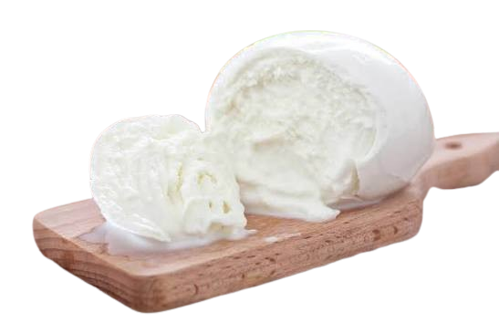

Mozzarella Cheese

Mozzarella cheese fun facts:
Source: cheese.com- Mozzarella can be made with cow's, goat's, or sheep's milk. But it is commonly made with the milk from water buffaloes.
- This deliciously fresh and milky cheese is a staple in Italian cuisine which can be enjoyed fresh, smoked and even melted; just like on your favourite pizza.
- If you're conscious about enjoying mozzarella cheese but suffer from dietary restrictions, then you're in luck! This cheese is naturally lower in lactose content making it suitable for those who are lactose intolerant.
- The most consumed cheese in the entire United States is not cheddar, but in fact, the popular mozzarella. As per the USDA (Food Data Central), Americans consume 11.5 pounds (5.2 kg) of mozzarella per capita per year.
- Mozarella is an Italian word "mozzare" from the Neapolitan dialect which means "to cut off". This name comes from the process of making mozzarella as it is cut up twice during its making process.
- Making mozzarella requires you to heat the milk, add citric acid, and allow it to curdle; which means you require almost no special equipment. Next, you need to strain the cheese whey, stretch the curds in hot water until they become smooth, and later shape the cheese into a shape you like- balls or blocks. After storing it in the refrigerator, the cheese is ready to be enjoyed!
- Mozarella is famously known for being a staple in Italian cuisine, particularly on a classic Margherita pizza with fresh tomato sauce and basil, but the stringy texture makes it versatile to enjoy by itself or on a Caprese salad.